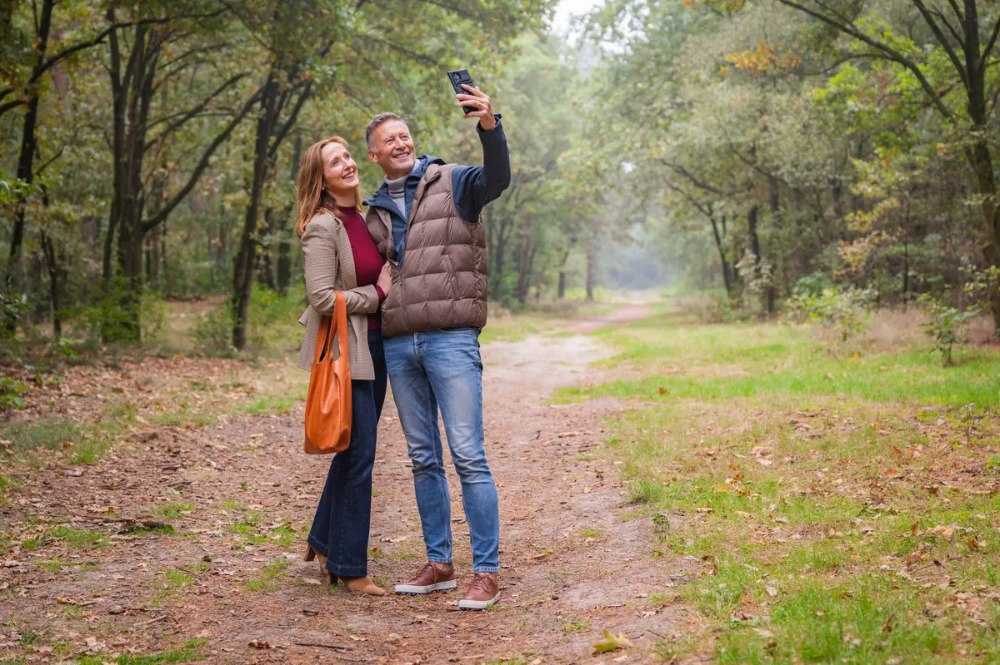

Walking around Venray
Nine walking routes, from the junipers a few minutes from the hotel to a full-day stage of the Pieterpad.
Walking from Hotel Asteria at a glance
- 9 routesfive areas nearby, four in the Maasduinen and the Peel
- 4 to 24 kmfrom an hour's walk to a full day
- 3 minutesdrive to the nearest starting point
- Routes at receptionfree walking maps on paper
Choose your route
At the top, five walking areas near the hotel, from the Boshuizerbergen a few minutes away to the Maasheggen near Sambeek. Below them, four routes in the Maasduinen and the Mariapeel, a fifteen to thirty minute drive away. Take the route with you on your phone or pick up a walking map at reception.
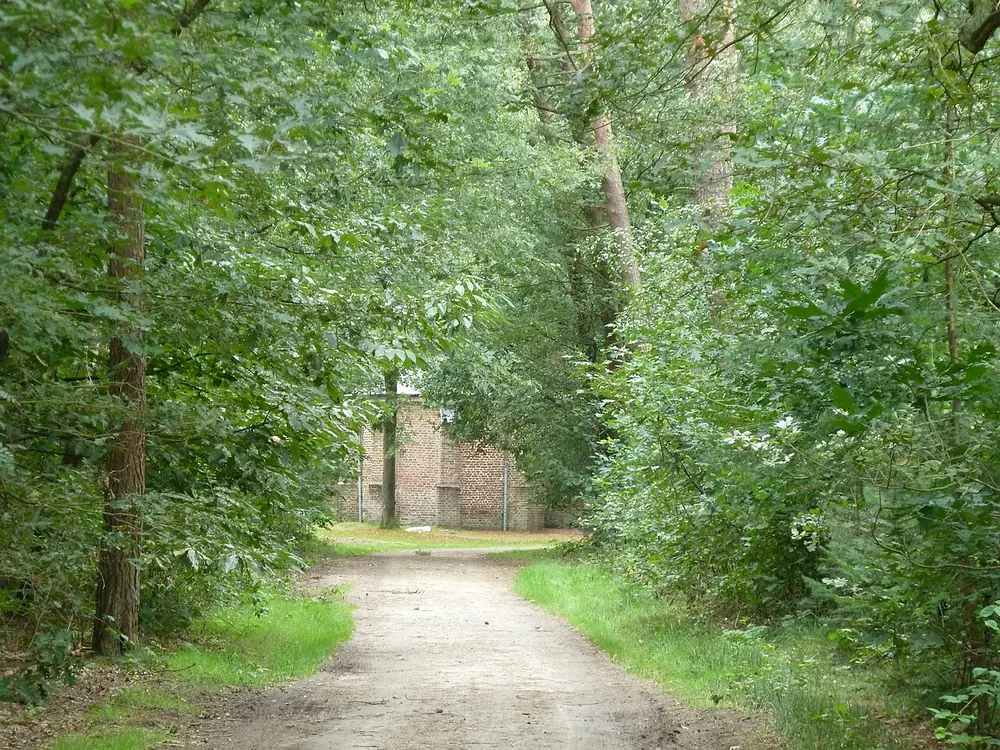
Landgoed Geijsteren: junction route
7.7 km1 h 56
7.7kmDistance
1 h 56Duration
Start Geijsteren · 8 min drive
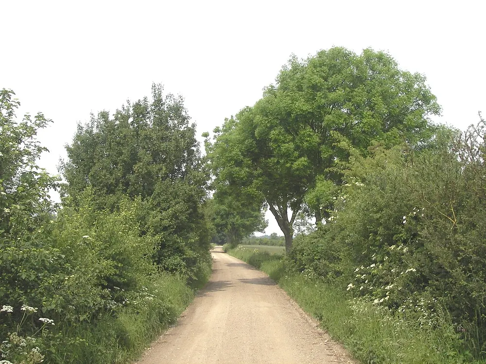
Maasheggen: Heg en Maas loop (long)
4.3 km1 h 05
4.3kmDistance
1 h 05Duration
Start Sambeek · 17 min drive

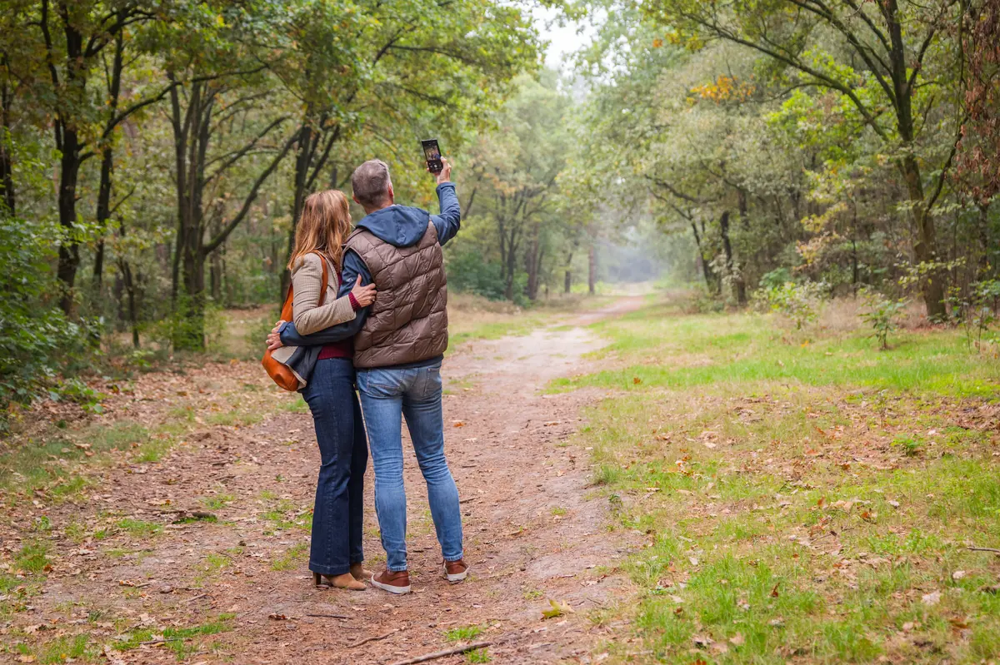
Pieterpad: stage Vierlingsbeek to Swolgen
24 km6 h 00
24kmDistance
6 h 00Duration
Start Vierlingsbeek · 9 min drive
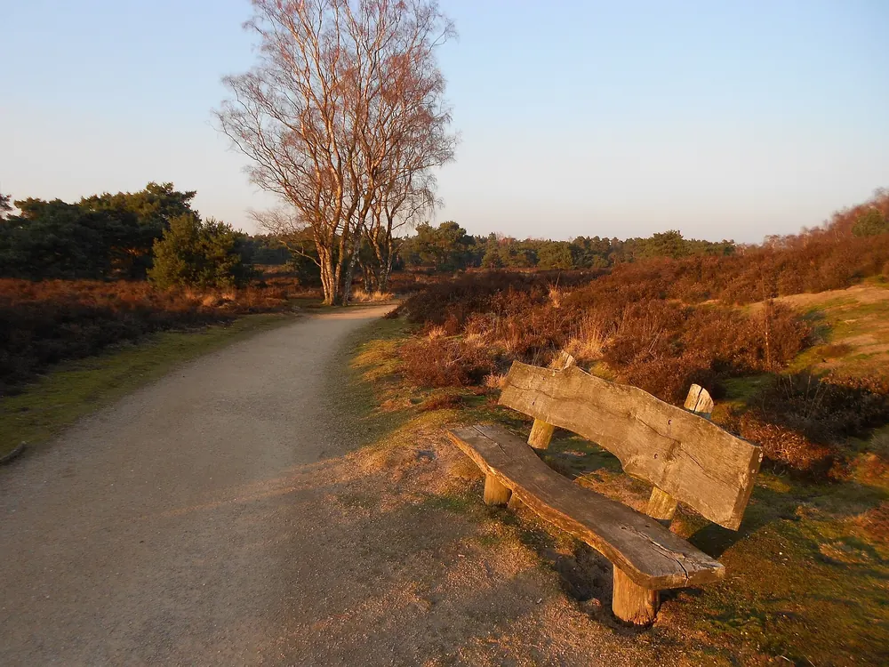
Maasduinen bij Bergen
9.93 km2 h 28564 kcal30 m
9.93kmDistance
2 h 28Duration
564kcalBurn
30mClimb
Start Bergen · 17 min drive
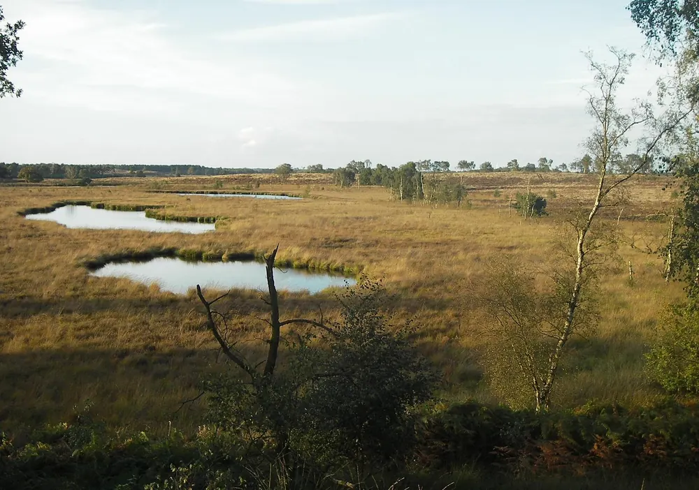
Lekkerbekken route, Maasduinen
10.32 km2 h 34586 kcal40 m
10.32kmDistance
2 h 34Duration
586kcalBurn
40mClimb
Start Arcen · 24 min drive
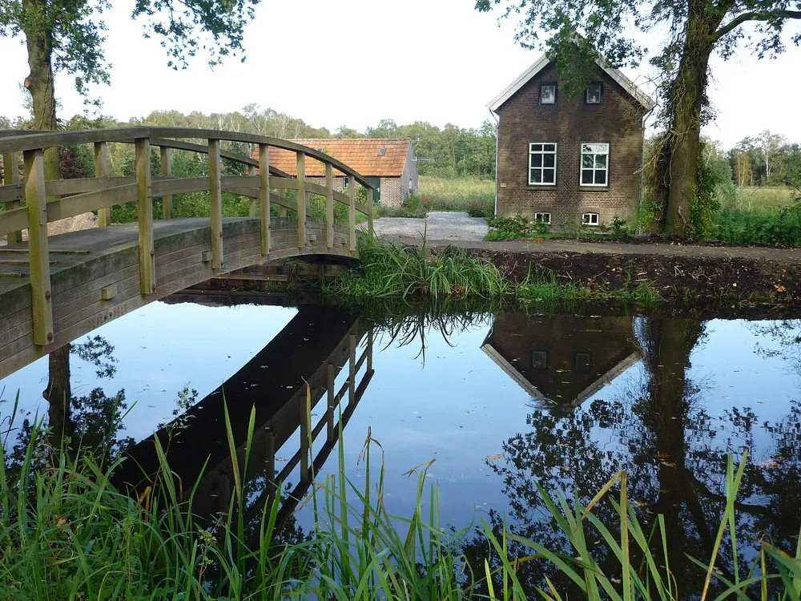
Tour of Mariaveen from Helenaveen
12.06 km3 h 00685 kcal16 m
12.06kmDistance
3 h 00Duration
685kcalBurn
16mClimb
Start Helenaveen · 28 min drive
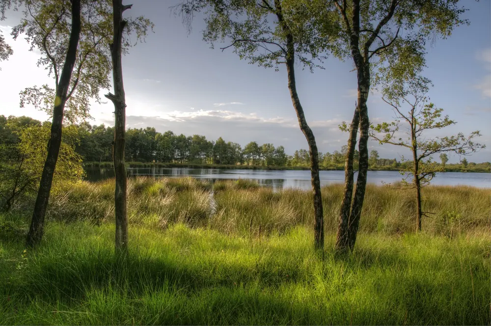
Walking through the Mariapeel
11.23 km2 h 48638 kcal13 m
11.23kmDistance
2 h 48Duration
638kcalBurn
13mClimb
Start Helenaveen · 28 min drive
All routes on the map
This is how the nine routes lie around the hotel. Tap a number and the map zooms in on that route.
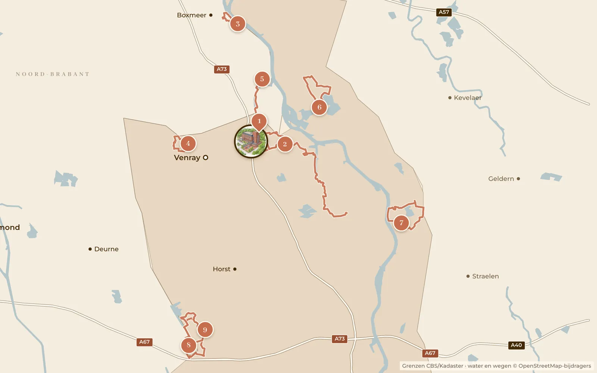
- Boshuizerbergen: white route5.5 km1 h 233 min drive
- Landgoed Geijsteren: junction route7.7 km1 h 568 min drive
- Maasheggen: Heg en Maas loop (long)4.3 km1 h 0517 min drive
- Ballonzuilbossen: 5 km nature walk5 km1 h 1511 min drive
- Pieterpad: stage Vierlingsbeek to Swolgen24 km6 h 009 min drive
- Maasduinen bij Bergen9.93 km2 h 2817 min drive
- Lekkerbekken route, Maasduinen10.32 km2 h 3424 min drive
- Tour of Mariaveen from Helenaveen12.06 km3 h 0028 min drive
- Walking through the Mariapeel11.23 km2 h 4828 min drive
Good to know
Everything for a day of walking is arranged at reception.
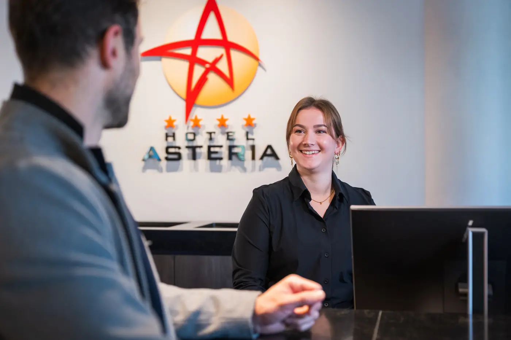
Routes at receptionWalking and cycling routes on paper, free of charge Packed lunchFor the road, just ask at reception
Packed lunchFor the road, just ask at reception RestaurantSit down to eat after your walk, the kitchen is open until 9.30 pm
RestaurantSit down to eat after your walk, the kitchen is open until 9.30 pm Bike hireBike or e-bike from reception, handy for reaching a starting point
Bike hireBike or e-bike from reception, handy for reaching a starting point
Stay the night
Then you start the next route well rested tomorrow. Choose your room; you see the price for your dates straight away when you book.

Deluxe room
After a day outdoors you slip into your own sauna and the tiredness slowly melts away.
- 25 m²
- Double bed or twin beds
- Infrared sauna
- Max. 2 guests

Comfort room
For travellers who above all want a good night's sleep. In the morning you set off again well rested.
- 22 m²
- 2 single beds
- Shower
- Max. 2 guests

Royale room
A weekend away, with time to unpack your suitcase and simply be there for a while.
- 25 m²
- Double bed or twin beds
- Bath or shower
- Max. 2 guests

Suite
To celebrate an anniversary or birthday, with a night you will still be talking about later.
- 40 m²
- King-size bed and sofa bed
- Infrared sauna
- Max. 4 guests

Bridal suite
After the big day, or simply an evening for the two of you: run the bath and unwind.
- 36 m²
- King-size bed
- Freestanding bath
- Seating area

Comfort room for 3
Travelling as a three? Then you can end the evening together in one room.
- 22 m²
- 3 single beds
- Up to 3 guests

Accessible room
Designed for guests in a wheelchair, with extra-wide doors and an adapted bathroom.
- 37 m²
- 2 separate beds
- Adapted bathroom
- Shower
Frequently asked questions
Any questions? Call reception: +31 478 511 466Which walking route is closest to the hotel?
The Boshuizerbergen near Smakt, a few minutes' drive away. There you walk 5.5 kilometres past thousands of junipers, pine forest and open drift sand.
Can I get walking routes at reception?
Yes. Free walking and cycling routes on paper are available at reception. Every route on this page also opens on your phone, with the button next to the route.
Can I take a packed lunch with me?
Yes. You can order a packed lunch for the road at reception.
Can I eat at the hotel after my walk?
Yes. You are welcome to join us for dinner in our restaurant; the kitchen is open until 9.30 pm.
Do I need a car to get to the starting point?
Not always. The Boshuizerbergen and Landgoed Geijsteren are within cycling distance, and you can hire a bike or e-bike at reception. For the Maasduinen and the Mariapeel you take the car: a fifteen to thirty minute drive.
What guests say on Google
Rating breakdown
5 stars46%
4 stars39%
3 stars10%
2 stars3%
1 star2%
Often mentioned
- Service
- Breakfast
- Food & drink
- Atmosphere
- Location
Translated from Dutch
Karin Van Zonneveld · July 2026
Nice hotel. Rooms are tidy, not too big. But there are two armchairs with a small table and a large walk-in shower. Pleasant air conditioning. No fridge, but coffee and tea in the room. Breakfast is fine. Dinner is delicious. Nothing missing.
Reviewed on Google
Nicole Scholte · March 2026
Very good hotel. Clean, spacious rooms. Large free car park. Extensive breakfast. Friendly and helpful staff.
Reviewed on Google
Davy Tollenaere · November 2025
Very pleasant hotel, super friendly. Well-kept rooms and a tasty breakfast. The e-bike is a good idea for nice trips in the area.
Reviewed on Google
Thea Sjoerdstra · October 2025
Lovely hotel, friendly and helpful staff, we ate very well. Clean hotel. Beautiful, spacious room. For me a solid 10!!
Reviewed on Google
Fia Sardar · August 2026
The staff were helpful and friendly. Our room and bathroom were top.
Reviewed on Google
arthur goulooze · April 2026
Lovely hotel, wonderful breakfast and delicious dinner choices!
Reviewed on Google
B Kruize · April 2026
It is always a place to rest when we come from Belgium or Germany, and above all welcoming and friendly service
Reviewed on Google
Bart Bouwers · June 2026
A fine place to be. To eat and to stay the night. Welcoming, nice people work there. Makes it very pleasant when you are away from home for a few days.
Reviewed on Google
Rather go by bike?
Ten cycle routes around Venray, seven of them on the junction network right by the hotel. You can hire bikes and e-bikes at reception.
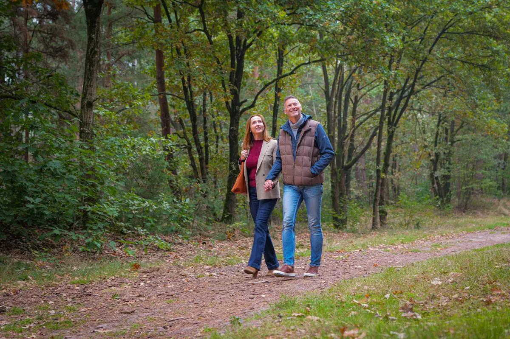
Walking routes
9 routes · 4 to 24 km
Cycle routes
Photos from Wikimedia Commons: Aat van den Heuvel (CC BY 3.0); Roberta4ever (Public domain); Chris Peel (CC BY-SA 3.0); Campinia88 (CC BY-SA 4.0); Busspotter (CC BY-SA 4.0); Romaine (CC0 1.0); Daan0416 (CC BY-SA 4.0); Take Mirrenberg (CC BY-SA 4.0); Lieblingsgouda (CC BY-SA 3.0 nl); Tuxyso (CC BY-SA 3.0); Peter bankers (CC BY-SA 4.0).

After the walk: sauna, dinner and your room
Book your stay and start the next route tomorrow.